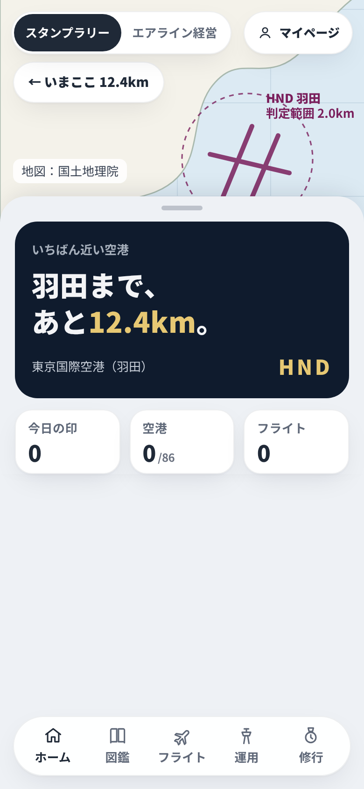
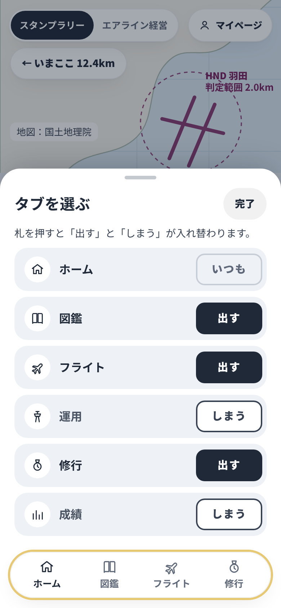
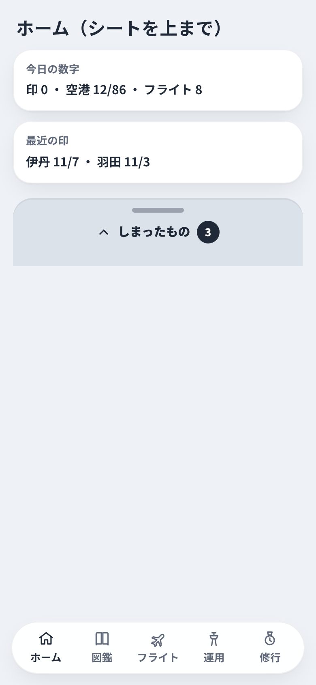
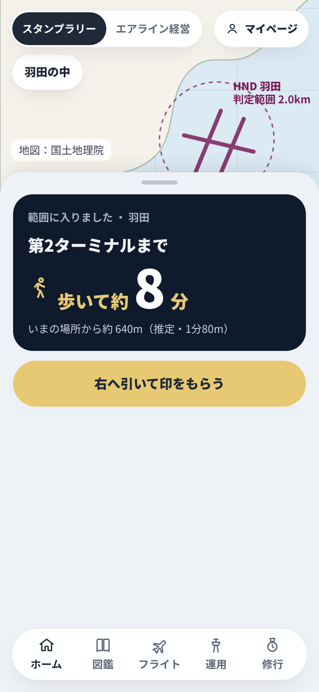
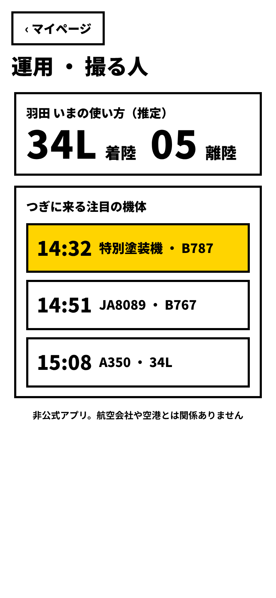
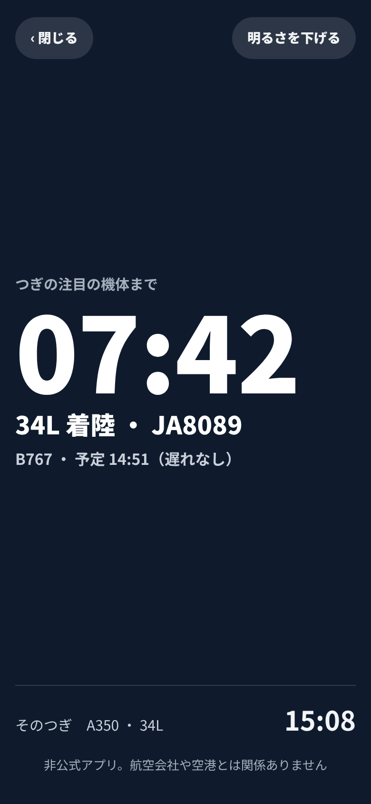
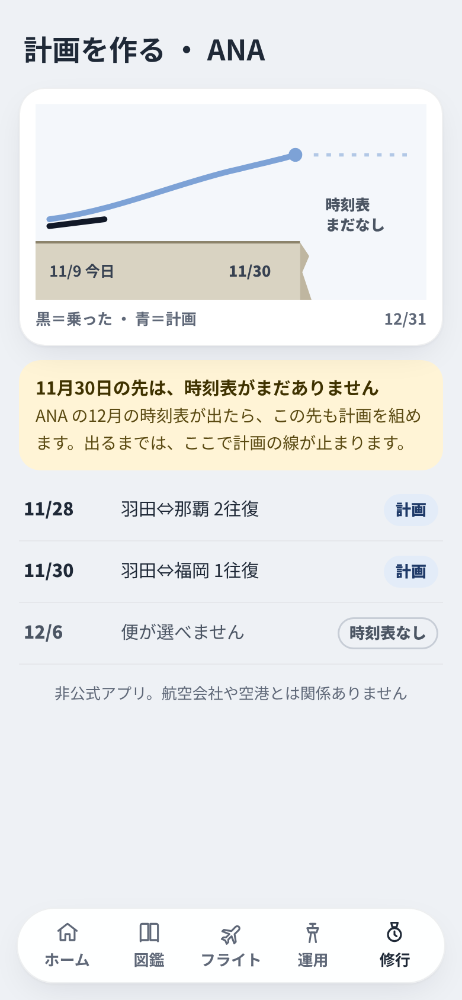
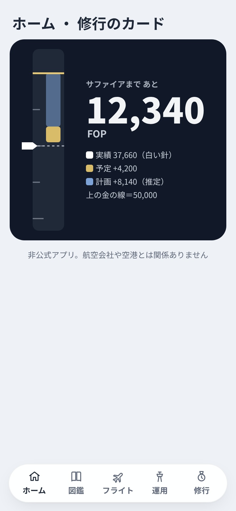

11/8 21時35分の PM の指示（本人「決まりなしの実験と担当たちの案を作ってみて」その1）。design/no-rules-1108 の ideas-*.md から8つを画面にした。見た目の決まりは外してよい実験で、アプリには入れない。中身・非公式の明記・ロゴや他人の写真なし・ほかのアプリのまねなし・字の大きさと押す所は守った。
| 画面 | 案・出した担当 | 外した決まり | 良い点 | 困る点 |
|---|---|---|---|---|
 | 一文の見出し改善担当 | パタパタのコード・ラベルと数字の形 | 今どうすればいいかが最初に分かる | 一文が長いと2行を超える・数字が文に埋もれる |
 | 状態を字の札改善担当 | ピル型（四角い札） | 色や取り消し線を見分けなくても字で読める | 決まった案3（− と ＋）と形が違う・縦に長い |
 | ホームの下の引き出し改善担当 | ほぼ外していない | 隠したものがホームで見つかり、その場で戻せる | ホームのいちばん下まで引かないと見えない |
 | 歩いて何分改善担当 | ほぼ外していない（中身が変わる） | 範囲の中で次にどうするかが分かる | 直線の推定で、保安検査や動く歩道を入れられない |
 | 真昼の高コントラスト・夜の赤撮る人用担当 | 薄いグレー・濃いグレーの本文・角丸カード・赤は控えめ | 日差しの下・夜の撮影地で読める | 切り替えの入口が要る・赤だけの画面は情報の差が付けにくい |
 | 待ち受けのカウントダウン撮る人用担当 | 大胆な余白・数字の書体 | 腕を伸ばした距離でも残り時間が読める | 推定の時刻なので、遅れで数字が戻る |
 | 時刻表の終わりの崖修行モード担当 | 説明は文で・地図は航空図風 | 12月の計画が組めない理由がすぐ分かる | 中身の変更（時刻表の最後の日を持つ）が要る |
 | 高度計のテープ・あと何往復修行モード担当 | 角丸カード・大胆な余白・単位は小さく | 境目までの残りが体で分かる・行動の数で考えられる | 1枚に1つの道しか出ない・運賃の入力がないと出せない |